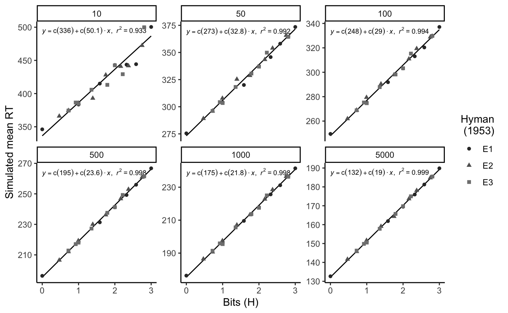

Supplemental_materials.RmdAbstract
This .pdf contains supplemental materials.400 participants were recruited from Amazon’s mechanical turk (restricted to people from the USA, with over 90% completion rate). Data were only analyzed for the 346 participants who successfully completed the task (98 men, 237 women, 11 no response). Additional demographic information is reported in Behmer and Crump (2017). The procedure was approved by the institutional review board at Brooklyn College of the City University of New York.
From Behmer and Crump (2017), “Typists copy-typed five normal paragraphs from the Simple English Wiki, a version of the online encyclopedia Wikipedia written in basic English. Four of the paragraphs were from the entry about cats (http://simple.wikipedia. org/wiki/Cat), and one paragraph was from the entry for music (http://simple.wikipedia.org/wiki/Music). Each normal paragraph had an average of 131 words (range 124–137).” In addition to typing English paragraphs, each typist also copy typed a paragraph of 5 letter random strings, and a paragraph of 5 letter strings that approximated the bigram structure of English.
The apparatus was a website displaying a textbox containing a single paragraph. Paragraph text was black, presented in 14 pt, Helvetica font. JavaScript was used to record keystroke timestamps in milliseconds.
From Behmer and Crump (2017), “Participants were instructed to begin typing with the first letter in the paragraph. Correctly typed letters turned green, and typists could only proceed to the next by typing the current letter correctly. After completing the task, participants were presented with a debriefing, and a form to provide any feedback about the task. The task took around 30 to 45 minutes to complete. Participants who completed the task were paid $1.”
hyman <- list(
e1_1 = list(stims = 1,
probs = 1),
e1_2 = list(stims = 1:2,
probs = rep(1/2,2)),
e1_3 = list(stims = 1:3,
probs = rep(1/3,3)),
e1_4 = list(stims = 1:4,
probs = rep(1/4,4)),
e1_5 = list(stims = 1:5,
probs = rep(1/5,5)),
e1_6 = list(stims = 1:6,
probs = rep(1/6,6)),
e1_7 = list(stims = 1:7,
probs = rep(1/7,7)),
e1_8 = list(stims = 1:8,
probs = rep(1/8,8)),
e2_1 = list(stims = 1:2,
probs = c(9/10,1/10)),
e2_2 = list(stims = 1:2,
probs = c(8/10,2/10)),
e2_3 = list(stims = 1:4,
probs = c(13/16,rep(1/16,3))),
e2_4 = list(stims = 1:6,
probs = c(15/20,rep(1/20,5))),
e2_5 = list(stims = 1:4,
probs = c(4/8,2/8,rep(1/8,2))),
e2_6 = list(stims = 1:6,
probs = c(5/10,rep(1/10,5))),
e2_7 = list(stims = 1:8,
probs = c(8/16,2/16,rep(1/16,6))),
e2_8 = list(stims = 1:8,
probs = c(rep(4/16,2),rep(2/16,2),rep(1/16,4))),
e3_1 = list(stims = c(11,12,21,22),
probs = c(2/10,8/10,0,0)),
e3_2 = list(stims = c(11,12,13,
21,22,23,
31,32,33),
probs = c(1/10,8/10,1/10,
0,0,0,
0,0,0)),
e3_3 = list(stims = c(11,12,13,14,
21,22,23,24,
31,32,33,34),
probs = c(7/10,1/10,1/10,1/10,
0,0,0,0,
0,0,0,0,
0,0,0,0)),
e3_4 = list(stims = c(11,12,13,14,
21,22,23,24,
31,32,33,34),
probs = c(1/6,3/6,1/6,1/6,
0,0,0,0,
0,0,0,0,
0,0,0,0)),
e3_5 = list(stims = c(11,12,13,14,15,16,17,18,
21,22,23,24,25,26,27,28,
31,32,33,34,35,36,37,38,
41,42,43,44,45,46,47,48,
51,52,53,54,55,56,57,58,
61,62,63,64,65,66,67,68,
71,72,73,74,75,76,77,78,
81,82,83,84,85,86,87,88),
probs = c(1/16,9/16,1/16,1/16,1/16,1/16,1/16,1/16,
0,0,0,0,0,0,0,0,
0,0,0,0,0,0,0,0,
0,0,0,0,0,0,0,0,
0,0,0,0,0,0,0,0,
0,0,0,0,0,0,0,0,
0,0,0,0,0,0,0,0,
0,0,0,0,0,0,0,0)),
e3_6 = list(stims = c(11,12,13,
21,22,23,
31,32,33),
probs = c(0,1/2,1/2,
0,0,0,
0,0,0)),
e3_7 = list(stims = c(11,12,13,14,15,
21,22,23,24,25,
31,32,33,34,35,
41,42,43,44,45),
probs = c(0,1/4,1/4,1/4,1/4,
0,0,0,0,0,
0,0,0,0,0,
0,0,0,0,0,
0,0,0,0,0)),
e3_8 = list(stims = c(11,12,13,14,15,16,17,18,
21,22,23,24,25,26,27,28,
31,32,33,34,35,36,37,38,
41,42,43,44,45,46,47,48,
51,52,53,54,55,56,57,58,
61,62,63,64,65,66,67,68,
71,72,73,74,75,76,77,78,
81,82,83,84,85,86,87,88),
probs = c(0,1/7,1/7,1/7,1/7,1/7,1/7,1/7,
0,0,0,0,0,0,0,0,
0,0,0,0,0,0,0,0,
0,0,0,0,0,0,0,0,
0,0,0,0,0,0,0,0,
0,0,0,0,0,0,0,0,
0,0,0,0,0,0,0,0,
0,0,0,0,0,0,0,0))
)
estimate_retrieval_time <-function(n_traces,mean,sd){
return(mean(replicate(5000,min(rnorm(n_traces,mean,sd)))))
}
sim_df <- data.frame()
for(i in 1:length(hyman)){
practice <- c(10,50,100,500,1000,5000)
for(j in 1:length(practice)){
mean_retrieval_time <-c()
cnt<-0
for(k in 1:length(hyman[[i]]$stims)){
trace_frequency <- round(practice[j]*hyman[[i]]$probs[k])
if(hyman[[i]]$probs[k] != 0){
if(trace_frequency < 1){
trace_frequency <- 1
}
cnt<-cnt+1
mean_retrieval_time[cnt] <- estimate_retrieval_time(trace_frequency,500,100)
}
}
the_probs <-hyman[[i]]$probs
the_probs <- the_probs[the_probs > 0]
cond_mean_retrieval_time <- sum(mean_retrieval_time*the_probs)
t_df <- data.frame(condition = names(hyman[i]),
practice = practice[j],
bits = sum(hyman[[i]]$probs*log2(hyman[[i]]$probs),
na.rm=TRUE)*-1,
modelRT = cond_mean_retrieval_time)
sim_df <- rbind(sim_df,t_df)
}
}
library(ggplot2)
sim_df <- cbind(sim_df,
experiment = rep(c("E1","E2","E3"),each=8*6))
source("ggplot_regressioneqn.R")
figureHyman <- ggplot(sim_df, aes(x=bits,
y=modelRT,
shape=experiment,
color=experiment,
group=NA))+
stat_smooth_func(geom="text",method="lm",hjust=0,
parse=TRUE,
size=2.5, show.legend = FALSE) +
geom_smooth(method="lm",se=FALSE, color="black", size=.5)+
geom_point()+
scale_colour_grey(end=.5)+
labs(color="Hyman \n (1953)")+
labs(shape="Hyman \n (1953)")+
theme_classic()+
xlab("Bits (H)")+
ylab("Simulated mean RT")+
facet_wrap(~practice, scales="free_y")
figureHyman
Behmer, Lawrence P., and M. J. C. Crump. 2017. “Crunching Big Data with Finger Tips: How Typists Tune Their Performance Towards the Statistics of Natural Language.” In Big Data in Cognitive Science, edited by Michael N. Jones, 319–41.
Crump, M. J. C., Walter Lai, and Nicholaus Brosowsky. 2019. “Instance Theory Predicts Information Theory: Episodic Uncertainty as a Determinant of Keystroke Dynamics.” OSF. https://doi.org/10.17605/OSF.IO/BDNQR.